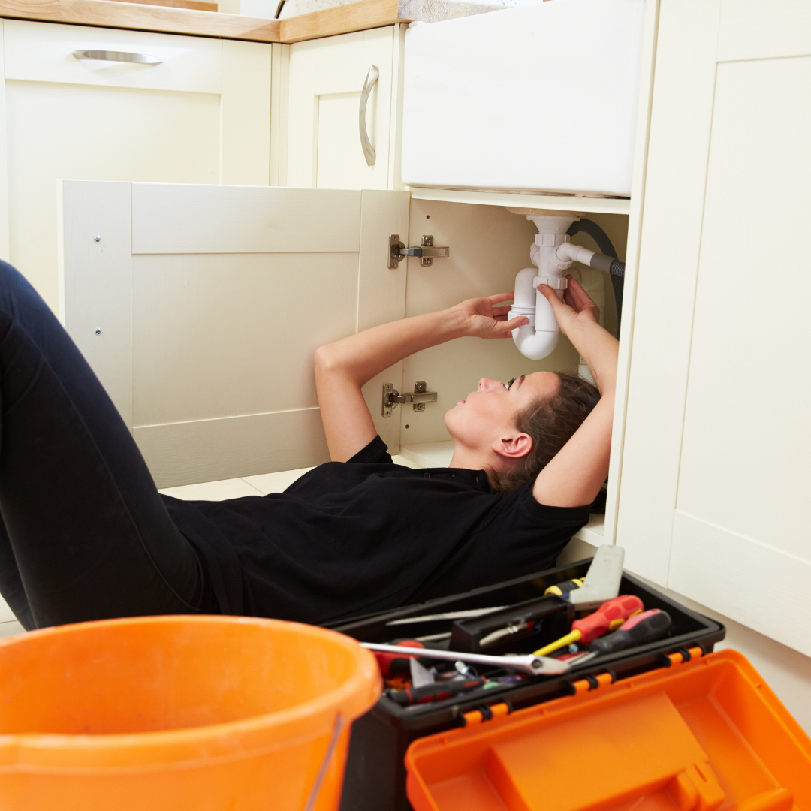
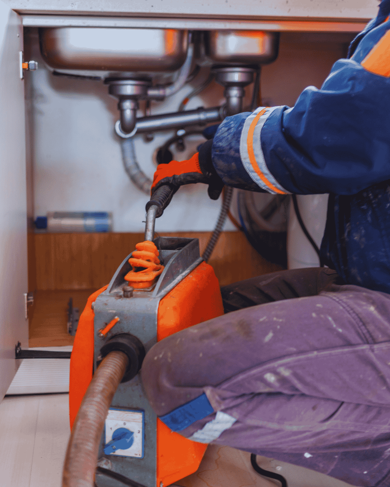
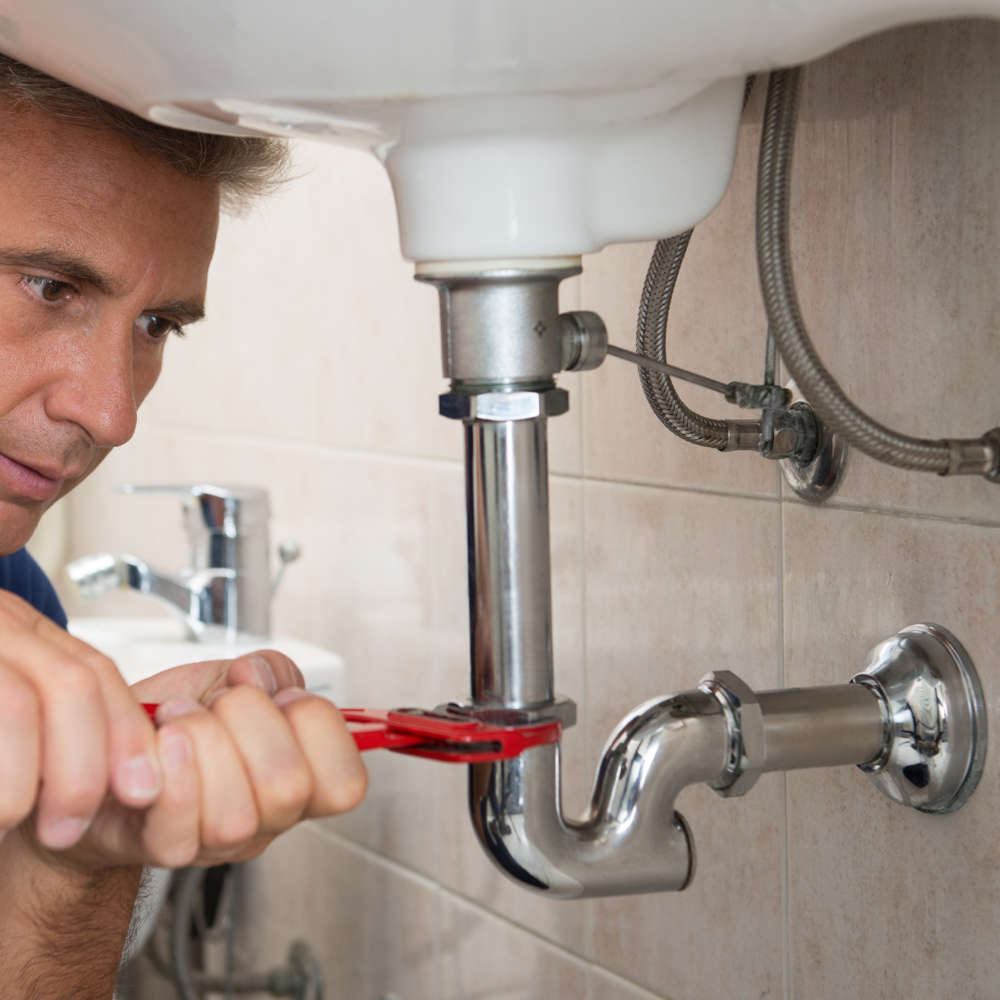

Home › Service Areas › Palm Springs
Plumber in Palm Springs, FL
Village homes, older pipe and honest flat pricing. Same-day service across Palm Springs.
Need a plumber in Palm Springs? The Village sits just west of Lake Worth Beach, and most of its housing went up between the 1960s and the 1980s. That means cast iron drains, aging copper and water heaters that have been in place longer than anyone remembers. Call (833) 567-2788 for same-day service and a flat written price. Palm Springs is covered by the same crews and the same flat pricing as the full service we run from Boynton Beach, with slab leak repair and sewer line repair the most requested here.
Every plumber we dispatch here holds a current Florida license and liability insurance, and pulls the paperwork on heaters, repipes and sewer jobs so you do not have to.

Pipe conditions
Cast Iron Drains in Village Homes
Cast iron was standard in Palm Springs construction through the 1970s. Half a century later, the inside of that pipe is rough with rust scale, the bottom channel is often eaten away, and every joint is a candidate for root intrusion.
The pattern homeowners notice is a kitchen or main line that backs up more often each year. Cabling opens a path through the blockage but leaves the rough wall behind, so it fills again. Descaling or replacement is what actually solves it.
We camera every main line before recommending anything, and you see the footage. If the pipe is sound and only needs cleaning, we will tell you that too.


Water supply
Village Utilities and Hard Water
Palm Springs is served by the Village of Palm Springs utility, drawing from local wellfields. The water is treated and safe, and like the rest of the county it is hard. Scale in water heaters is the practical consequence, and it is why heaters here often fail before the warranty says they should.
An annual flush costs very little and adds years to a tank. If your heater rumbles or pops when it heats, sediment has already built up on the tank floor and a flush should happen soon.
Hard water
Protecting Water Heaters and Fixtures From Palm Springs Hard Water
Village water is safe to drink and hard enough to shorten the life of every appliance that heats it. Two habits change the outcome.
Flush the tank annually. Calcium settles on the tank floor, insulating a gas burner from the water or burying an electric element. Popping and rumbling while the unit heats means the layer is already there. A flush takes under an hour and restores usable capacity.
Replace the anode rod. This sacrificial rod corrodes so the steel tank does not. Once consumed, the tank starts corroding and no repair reverses it. Every three to five years is the right interval on this water.
For fixtures, descaling aerators and shower heads restores flow that people assume is a pressure problem. If scale is a constant battle across the house, a properly sized softener pays for itself in appliance life alone.

Good to know
Palm Springs Plumbing: Village Utilities and Local Housing Stock
The Village of Palm Springs runs its own utility, and most of its housing shares one construction era.
Village of Palm Springs utility
The village operates its own water utility, drawing from local wellfields, and administers permitting for plumbing work within its boundaries. Water is treated and safe, and it is hard, which is the single biggest factor in local water heater and fixture life. Backflow testing on irrigation connections is reported to the village rather than the county.
1960s to 1980s construction
Most Palm Springs housing went up between the 1960s and the 1980s, which puts local plumbing right at the age where cast iron drains, original copper and long-serving water heaters begin failing together. Cabling a scaled cast iron line opens a channel but leaves the rough wall behind, which is why repeat backups here usually call for descaling or replacement rather than another clearing.
Multi-family and rental properties
The village has a substantial number of duplexes, small apartment buildings and rental homes. Shared laterals and stacks mean one unit’s habits affect another, and ownership of a given pipe section is not always obvious. We camera the line and identify the boundary before quoting so the repair is billed to the right party.
Booking a plumber in Palm Springs?Call for a price range on the phone and a same-day arrival window.
What this area calls about
Which Plumbing Services Do Palm Springs Homeowners Need Most?
Every service we run is available here, but four of them account for most of what we are called out to in Palm Springs. These are the ones worth understanding before you need them.
Slab Leak Repair
The village's 1950s to 1970s housing was built with copper in the slab, and that copper is now well past the age where pinholes begin. Early location keeps it a spot repair.
Sewer Line Repair
Original cast iron laterals under mature trees produce the repeat backups we see most here. A recorded camera run decides what the line actually needs.
Toilet Repair
Older bathrooms with narrow rough-ins are common, and a rocking bowl in a slab home means the flange seal is leaking into the floor rather than onto it.
Water Heater Repair
Garage and closet replacements are the norm, and venting on older village homes often needs bringing up to current code at the same time.
Five minutes, twice a year
What Should Palm Springs Homeowners Check Themselves?
Each of these takes a minute and heads off a repair that gets much larger if it runs unseen.
- Walk the floor barefoot and mark warm spots; most village housing is slab-built.
- Watch the yard above the lateral for a soft or unusually green strip.
- Rock each toilet gently and check for water at the base.
- Read the meter with everything closed for two hours.
- Test the main shutoff twice a year.
One of these flagging up is exactly when to call (833) 567-2788, not months later.
Full service list
What Plumbing Work Do We Do in Palm Springs?
Every service below is available at Palm Springs addresses, on the same schedule and the same flat-rate pricing we use in Boynton Beach.
Emergency Plumber
Burst lines, overflowing toilets and sewage at a floor drain do not wait for business hours. We answer live, talk you through the nearest shutoff, then dispatch a licensed plumber with a stocked truck and a written flat price before any work starts. The 1950s to 1970s slab homes around Congress Avenue and Forest Hill Boulevard are where slab copper and cast iron fail most in Palm Springs.
Drain Cleaning
Slow showers, gurgling sinks and a main line that backs up every few months are rarely one hair clog. They are grease, scale and old cast iron that has narrowed over decades. We clear the blockage with cabling or hydro jetting, then camera the pipe so you can see what actually caused it. Original cast iron laterals are the recurring problem here, and camera footage settles the question quickly.
Water Heater Repair & Installation
Most no-hot-water calls turn out to be a thermostat, element or gas valve rather than a dead tank, so we diagnose before we quote. When replacement is the honest answer, we size the unit to your household, pull the permit, and take the old heater away. Most installs here are garage or closet replacements in homes whose original venting needs bringing up to current code.
Tankless Water Heater Installation
A tankless water heater ends the back-to-back shower problem and frees up the closet or garage floor. Getting twenty years out of one depends on demand sizing, gas or electrical capacity and descaling access, not the brand on the box. We size the unit to your real fixture load and build in isolation valves for annual flushing. Panel and gas capacity in older Palm Springs homes often decide the unit before preference does.
Leak Detection and Repair
Finding the leak is the job; opening the wall is the last step. We isolate pressure zones, then use acoustic and thermal equipment to narrow a hidden leak to inches before anything is cut, whether it sits under a slab, behind tile or out in an irrigation run. Palm Springs homes are compact and close in, so a plumber is usually on site quickly.
Slab Leak Repair
Warm patches on a tile floor, running water with every tap closed and hairline cracks across a room all point under the concrete. We locate the leak precisely, then price spot repair, overhead reroute and full repipe side by side so you can weigh them against each other. Original cast iron laterals are the recurring problem here, and footage settles it faster than guessing.
Sewer Line Repair and Replacement
When the main line backs up on a schedule, the pipe is the problem rather than what went down it. A recorded camera survey gives us the depth and position of every crack, offset and root intrusion, and that footage decides whether you need a spot repair, a liner or a new lateral. Slab-built 1960s housing hides its leaks underfoot rather than in the walls.
Pipe Repair and Installation
One pinhole in newer pipe is a repair. The third leak in sixty-year-old copper is a system telling you it is finished. We handle single burst lines and whole-home repiping in PEX, CPVC and copper, routed through attic and walls with small drywall openings, pressure tested and patched when we leave. Older service lines in 33461 mean pressure problems are worth checking alongside any leak.
Toilet Repair and Installation
A running toilet is usually a cheap part; a rocking one is a failing flange seal quietly soaking the subfloor. We tell you which you have, then repair it or set a new comfort-height unit on a fresh flange and wax seal. Older bathrooms with narrow rough-ins are common, so we check clearances before anything is ordered.
Faucet & Fixture Installation
Kitchen faucets, shower valves, tub spouts, pot fillers and bidet seats all get installed with new quarter-turn angle stops and braided supply lines every time. Old seized shutoffs are the single most common cause of a call-back leak, and replacing them while the cabinet is already open costs almost nothing extra. We keep common trim stocked, so most fixture calls finish on the first visit.
Kitchen and Bathroom Plumbing
A remodel is won or lost at rough-in, while drain slope, valve depth and venting are still easy to get right. We handle rough-in and final trim, work to your contractor's schedule, and carry the inspections through so the job closes cleanly. Narrow older rough-ins are common here, so clearances get checked before anything is ordered.
Garbage Disposal Repair & Installation
A disposal that hums is jammed, one that is silent has lost power, and one dripping from the bottom seam has a failed motor seal that cannot be repaired. We diagnose the unit and the drain plumbing together, because a badly pitched trap arm or a missing dishwasher high loop will keep clogging no matter how good the disposal is. Common trim is kept stocked so most Palm Springs fixture calls finish on the first visit.
Gas Line Repair and Installation
We size, run and pressure test gas lines for ranges, dryers, pool heaters, generators and outdoor kitchens, and we pull the permit. Existing buried steel gets inspected before we tie in, because sandy, damp soil is hard on older runs. Hard water and older service lines make filtration and backflow work routine in 33461 and 33406.
Backflow Testing and Prevention
Irrigation systems, pool fills, fire lines and commercial kitchens all need a backflow assembly tested annually and reported to the water provider. We test, repair and replace assemblies, then file the paperwork so the notice is closed out and you are not left chasing a compliance letter. The Village of Palm Springs permits this work, and we close the inspection out.
Water Filtration Installation
Hard water costs you a water heater long before you notice it on the glassware. We test first, then size a softener, carbon tank or reverse osmosis system to the result and your real demand, and install it where filter changes are not a chore. The Village of Palm Springs administers permitting for plumbing work inside the village.
Sump Pump Installation and Repair
A high water table means a sump pump is the difference between a damp slab and a flooded room. We install and replace pumps, check the float, the discharge line and the check valve, and add battery backup where losing power at the wrong moment is the real risk. Hard water across the village makes filtration one of the more frequent upgrades we fit.
FAQs
What Do Palm Springs Homeowners Ask Us Most?
How quickly can a plumber get to Palm Springs?
Same day for most calls, and after-hours emergency calls are dispatched as they come in rather than held for the morning.
My main line clogs every few months. What is wrong?
Almost certainly scaled or damaged cast iron. A camera inspection will show whether descaling or replacement is the right fix.
Do you pull permits in the Village of Palm Springs?
Yes, for water heaters, repipes, sewer work and gas lines. We schedule and meet the inspection.
Is an annual water heater flush worth it?
Yes. It is one of the cheapest services we offer and it directly extends tank life in hard water.
Does Palm Springs handle its own plumbing permits?
The Village of Palm Springs administers permitting for plumbing work inside the village, and backflow testing on irrigation connections is reported to the village rather than the county. Water heaters, repipes, sewer work and gas lines all require a permit, and we pull and close it as part of the price.
Coverage by ZIP code
Palm Springs Plumber Coverage by ZIP Code
The Village of Palm Springs sits in 33461 and 33406, and most of its housing went up between the 1950s and 1970s. That means slab-routed copper and original cast iron drains, which is exactly the work our plumbers do here most weeks.
Plumber in 33461
The Palm Springs village core around Congress Avenue and Forest Hill Boulevard. Slab leak detection, whole-home repipes and water heater replacement in 1960s homes.
Plumber in 33406
North and east Palm Springs toward the West Palm Beach line. Drain cleaning, sewer lateral repair and after-hours emergency plumber calls.
Nearby ZIP codes we also cover the same day
- 33415
- 33463
- 33413
- 33460
Coverage questions are quickest by phone. (833) 567-2788 will confirm your ZIP and a window.
Which Nearby Cities Do We Also Cover?
- Delray Beach
- Lake Worth Beach
- Lantana
- Boca Raton
- Wellington
- Greenacres
- Hypoluxo
- Ocean Ridge
- Manalapan
- West Palm Beach
- Highland Beach
Palm Springs is compact and close in, which keeps arrival windows short. Lake Worth Beach is immediately east, Greenacres is west, and West Palm Beach is north. Village addresses sit in 33461 and 33406, and some nearby streets carry a Lake Worth mailing name even though they are not in the city.
Need a plumber in Palm Springs today?
Call now for a live answer, a flat written price and a same-day arrival window across Palm Springs and Palm Beach County.